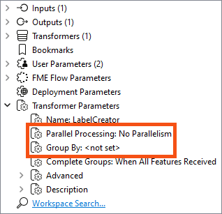
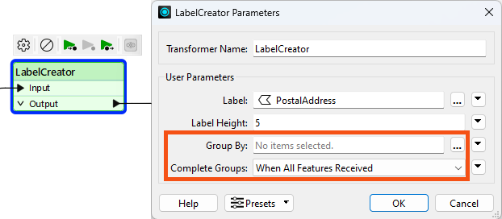

You can use multiple engines on FME Flow to process multiple workspaces in parallel. For more information, see Job Orchestration with Automations or Getting Started with the Split-Merge Block.
After completing this lesson, you’ll be able to:
Parallel processing can improve performance on high-end machines by running multiple actions simultaneously as separate processes. A system architecture of multiple processors with multiple cores is helpful because the system can assign each process to a different core. With multiple processes running on multiple cores, the entire translation can run quicker than on a single core.
Parallel processing in FME covers not an entire workspace but just a specific subsection of the workspace. You control where parallel processing occurs through custom transformers, a natural method to subdivide a large translation.
Parallel processing runs on features grouped by attribute values, similar to Group-Based transformers. Custom transformers using parallel processing assign each group to a separate process.
You can use multiple engines on FME Flow to process multiple workspaces in parallel. For more information, see Job Orchestration with Automations or Getting Started with the Split-Merge Block.
Each custom transformer has a set of parameters - located in the Navigator window - that relates explicitly to parallel processing. Here, you can determine the level of parallel processing and the Group By attribute that defines the parallel processing groups:

The parameter that controls parallel processing allows different levels of effort to be applied. Each level specifies the number of processes to run simultaneously relative to the number of cores available:
| Parameter | Processes | 2 Cores | 4 Cores | 8 Cores |
|---|---|---|---|---|
| No parallelism | 1 Process | 1 Process | 1 Process | 1 Process |
| Minimal | Cores / 2 | 1 Process | 2 Processes | 4 Process |
| Moderate | Cores x 1 | 2 Processes | 4 Processes | 8 Process |
| Aggressive | Cores x 1.5 | 3 Processes | 6 Processes | 12 Process |
| Extreme | Cores x 2 | 4 Processes | 8 Processes | 16 Process |
As mentioned above, minimal parallelism results in two simultaneous FME processes on a quad-core machine. Extreme parallelism would result in eight (assuming the workspace has eight tasks to process simultaneously).
There is also a hard cap:
| Process Cap | 2 Cores | 4 Cores | 8 Cores |
|---|---|---|---|
| 16 processes | Maximum 4 processes | Max 8 processes | Max 16 processes |
These numbers - we should note - are the maximum number of processes at any one time. It’s possible to divide data into more groups and process them separately, but they won’t coincide. For example, given a quad-core machine, moderate processing, and 20 groups of features, there will be a total of 20 processes, but only four will run at any one time. When one of the four finishes, a new one is started.
The Parallel Process By parameter requires the author to select an attribute, and - as already covered - selecting attributes for a custom transformer parameter requires some consideration.
In particular, you cannot simply pick an attribute to use for this parameter’s value:

Instead, you can publish this parameter (and one for Complete Groups mode) to make them available as one of the custom transformer parameters:

Parallel processing is most effective in two specific scenarios. The first scenario involves a small number of groups, each with a large amount of processing. Parallel processing is less effective when there are many small groups. The second scenario involves many small tasks that the workspace is offloading elsewhere. For example, when the workspace passes features to a web service HTTPCaller transformer, it’s most efficient to have FME fire off as many requests as it can as quickly as possible.
The keys to parallel processing are designing a custom transformer as a standalone subsection and defining the processing groups.
The custom transformer splits features into groups, processes each as a separate action, and then combines them back into a single group on exit.
It’s essential to be aware that features in different groups cannot be related because each group is processed independently. If features are related and their results depend on each other, they must be in the same group.
The easiest way to think of this is that the custom transformer is a Group-Based transformer. Because it is a wrapper for all the individual FME transformers in the definition, it allows them to operate in groups, even if they are Feature-Based.
Learn more about Group-Based and Feature-Based transformers.
Sometimes, the incoming data is unrelated and must be split into arbitrary groups for processing. In these cases, where there is no identifier to define groups, one can be created manually by generating attributes with the ModuloCounter or RandomNumberGenerator transformers.
For example, the author of the workspace below has many address features from which to create labels. To speed up the process, they activate parallel processing:

They could group by PostalCode but choose not to because all addresses fall inside only one of two postal codes. Therefore, they created an artificial group using ModuloCounter. Note the Group By parameter in the custom transformer is set to the _modulo_count attribute.
In such a scenario, creating only one group per intended FME process is best. For example, a maximum of eight processes at a time are permitted on a quad-core (four-core) computer with Extreme parallel processing. Therefore, as shown here, the optimum number of groups to use is also eight.